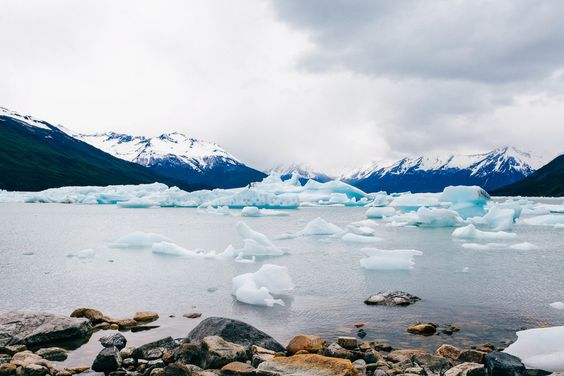
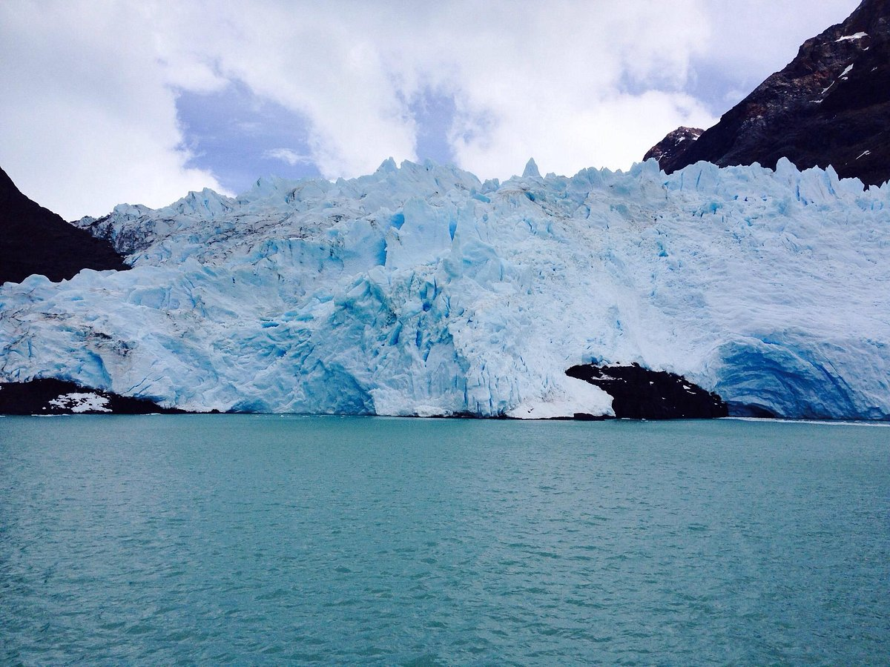
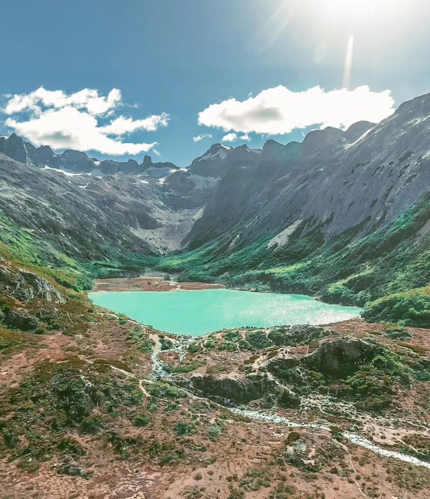
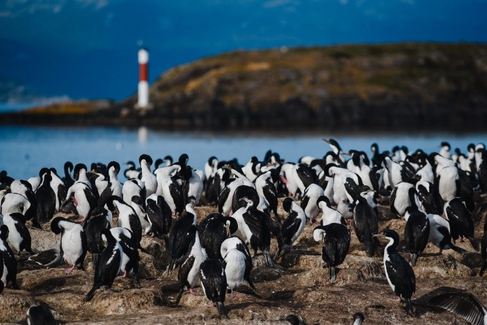
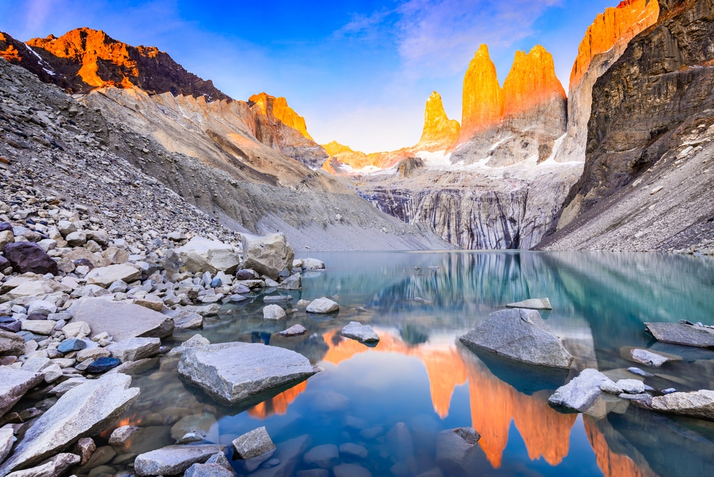
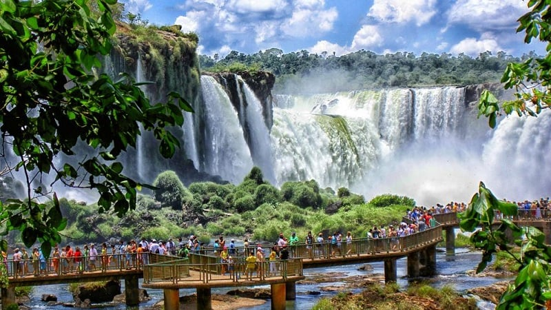
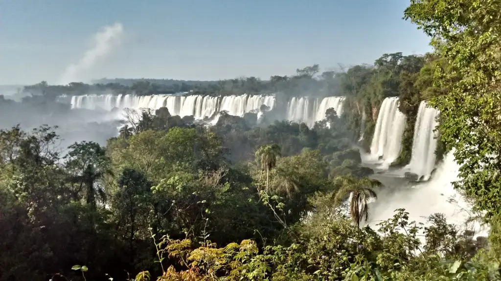

Pontos Turísticos
Parque Nacional Los Glaciares em El Calafate - Patagônia Argentina
O Parque Nacional Los Glaciales é um dos maiores parques nacionais da Argentina. Quase a metade dos seus 13 mil km² é coberta por geleiras. Ele se divide em três áreas: 1. sul, onde está o Glacial Perito Moreno e de onde se tem acesso a El Calafate. 2. Centro, onde está o Glacial Upsala e que fica entre os Lagos Argentino e Viedma. 3. Norte, onde está o Cerro Fitz Roy e que tem os melhores trekkings da região.

O Glaciar Perito Moreno é uma das paisagens mais bonitas e emblemáticas da Patagônia. Sua imensa superfície de 60m de altura e 5km de comprimento se divide da Argentina para o Chile numa paisagem inigualável. É tão impressionante que se tornou patrimônio da humanidade pela Unesco.

Situado no Parque Nacional Los Glaciares, Upsala éo terceiro maior glaciar da América do Sul. Com superfície de 765 quilômetros quadrados e paredes de até 40 metros de altura, de acordo com medições do Centro de Interpretação Glaciarium realizadas em maio de 2011, ocupa um vale alimentado por vários outros glaciares e flui desde o Campo de Gelo do Sul da Patagônia até o Lago Argentino.

O Fitz Roy, ou xxx Cerro Chaltén, é uma montanha de 3.405 m localizada a leste do sul do gelo patagônico ao lado do Chile, perto da fronteira com a Argentina, na Patagônia, perto da aldeia de Cerro Castillo e da aldeia de El Chalten. . O grupo montanhoso ao qual pertence forma um dos grandes nunataks do campo de gelo da Patagônia. Alguns quilómetros a sul desta montanha começa a última zona fronteiriça indefinida entre os dois países (fora da Antárctida), que atinge a colina de Murallón a sul.
Laguna Esmeralda e Ilha Martillo - Ushuia Terrra do Fogo
A Terra do fogo é uma região mítica, inspiradora e impressionante composta de paisagens de geleiras, grandes montanhas e lagos turquesas. Ushuaia é a capital de Terra do Fogo, na Patagônia Argentina. É um ponto turístico da Argentina com temperaturas baixas, mesmo no Verão.

A Laguna Esmeralda, ou Lago Esmeralda, é um dos tantos lagos da Terra do Fogo, mas destaca-se entre os demais lagos de Ushuaia pela coloração esverdeada que tem. O cenário é bonito, bucólico e o passeio é ideal para quem gosta de paisagens naturais e de caminhadas. O local não é tão simples de se conhecer - o lago fica cercado pelos Andes e para chegar até ele é necessário fazer uma trilha, com direito a muita lama no caminho, principalmente se tiver chovido nos dias anteriores ao passeio. A sinalização do local não é das melhores, por isso é um passeio indicado para fazer com alguém que conheça a região. A recomendação é fazer esse passeio com botas impermeáveis devido ao gelo/à lama na hora do trekking.

A Isla Martillo, mais conhecida como Pinguinera, éuma ilha do Canal de Beagle procurada pelos pinguins em seu período de reprodução. O lugar recebe colônias de pinguins de Magalhães e pinguins-reis durante o verão, ou entre outubro e meados de abril - período mais quente do ano; portanto, só é possível ver pinguins durantes esses meses.

A Patagônia Argentina é um ponto turístico da Argentina em que a Natureza brilha, encanta e surpreende. Composta pelas provincias La Pampa, Neuquén, Rio Negro, Chubut, Santa Cruz e Terra do Fogo. É uma região predominantemente fria e seca e apresenta um espetáculo atrás do outro.
Parque Nacional Iguazú
O Parque Nacional Iguazú, em Puerto Iguazú, recebe a sua parte das Cataratas do Iguaçu no lado argentino. Dois terços das Cataratas é Argentina, ponto turístico super importante para o país. O parque possui três trilhas e um trenzinho que leva até mais próximo do acesso às Cataratas do Iguazú.

O Parque Nacional Iguazú, em Puerto Iguazú, recebe a sua parte das Cataratas do Iguaçu no lado argentino. Dois terços das Cataratas é Argentina, ponto turístico super importante para o país. O parque possui três trilhas e um trenzinho que leva até mais próximo do acesso às Cataratas do Iguazú.

A Catarata do Iguaçu é resultado de um erupção vulcânica, são 2,7 km de largura, com altura que varia de 60 a 82 metros. Os 275 saltos de água estão divididos na fronteira Brasil e Argentina em meio à Selva Paranaense. Considerada Patrimônio Natural da Humanidade, as Cataratas surpreendem pela grandiosidade e poder de suas águas. A melhor época para conhecer é após o período de chuvas. O rio fica mais cheio e as quedas de água ganham mais força.